GPIO Utility on I-Pi SMARC LEC-EL This document provides detailed instructions for utilizing the gpio pins on the I-Pi SMARC LEC-EL module based on Yocto. Prerequisites GPIO libraries are included with our image by default. Power up the targeted device with all the necessary cables, such as HDMI, keyboard, mouse, and ethernet cable. Utilizing the GPIO Pins with Linux Open the terminal and type the following command to navigate to gpio cd /sys/class/gpio By default, the/sys/class/gpio can only be accessed by root, so log in as root. intel-corei7-64 login: root To view the details of Gpiochip cat /sys/kernel/debug/gpio root@intel-corei7-64:/sys/class/gpio# cat /sys/kernel/debug/gpio gpiochip5: GPIOs 701-708, parent: platform/adl-ec-acpi, adl-ec-gpio:gpiochip4: GPIOs 709-716, parent: platform/INTC1020:05, INTC1020:05:gpiochip3: GPIOs 717-796, parent: platform/INTC1020:04, INTC1020:04:gpiochip2: GPIOs 797-843, parent: platform/INTC1020:03, INTC1020:03:gpiochip1: GPIOs 844-956, parent: platform/INTC1020:01, INTC1020:01:gpiochip0: GPIOs 957-1023, parent: platform/INTC1020:00, INTC1020:00:root@intel-corei7-64:/sys/class/gpio# Note: Here, the gpiochip5 is connected with the BMC, which can be accessed by both SEMA EAPI and GPIO sys interface. To check the gpiochip label cat /sys/class/gpio/gpiochipN/label ( N is the gpiochip base number)root@intel-corei7-64:~# cat /sys/class/gpio/gpiochip701/label adl-ec-gpioroot@intel-corei7-64:~# cat /sys/class/gpio/gpiochip709/label INTC1020:05root@intel-corei7-64:~# 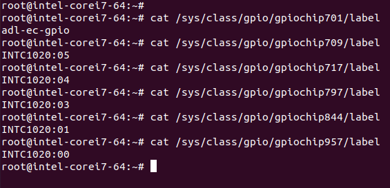 To export the GPIO pin echo N > export (N should replace with gpio chip base number)root@intel-corei7-64:/sys/class/gpio# echo 702 > export root@intel-corei7-64:/sys/class/gpio# lsexport gpiochip701 gpiochip717 gpiochip844 unexportgpio702 gpiochip709 gpiochip797 gpiochip957root@intel-corei7-64:/sys/class/gpio# 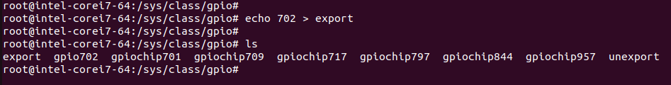 To read the exported pin details, you can use the command cat cd gpioN (N should be replaced with gpio chip base number)lscat direction cat valueroot@intel-corei7-64:/sys/class/gpio# cd gpio702/root@intel-corei7-64:/sys/class/gpio/gpio702# lsactive_low device direction power subsystem uevent value root@intel-corei7-64:/sys/class/gpio/gpio702# cat direction inroot@intel-corei7-64:/sys/class/gpio/gpio702# cat value 0root@intel-corei7-64:/sys/class/gpio/gpio702# cat active_low 0root@intel-corei7-64:/sys/class/gpio/gpio702# 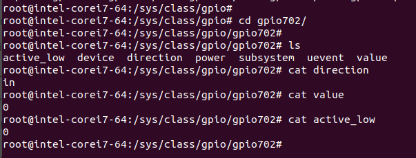 To read the direction and value of a pin Direction:cat /sys/class/gpio/gpioN/direction (N should replace with gpio chip base number)root@intel-corei7-64:~# cat /sys/class/gpio/gpio702/direction in or cd /sys/class/gpio/gpioNcat direction root@intel-corei7-64:~# cd /sys/class/gpio/gpio702/root@intel-corei7-64:/sys/class/gpio/gpio702# cat direction inValue:cat /sys/class/gpio/gpioN/value (N should replace with gpio chip base number)root@intel-corei7-64:~# cat /sys/class/gpio/gpio702/value0 orcd /sys/class/gpio/gpioNcat value root@intel-corei7-64:~# cd /sys/class/gpio/gpio702/ root@intel-corei7-64:/sys/class/gpio/gpio702# cat value0root@intel-corei7-64:/sys/class/gpio/gpio702# To write the direction of a pin to input echo in > /sys/class/gpio/gpioN/direction (N should replace with gpio chip base number)root@intel-corei7-64:~# echo in > /sys/class/gpio/gpio702/direction root@intel-corei7-64:~# cat /sys/class/gpio/gpio702/direction inroot@intel-corei7-64:~# or cd /sys/class/gpio/gpioNecho in> direction root@intel-corei7-64:~# cd /sys/class/gpio/gpio702/ root@intel-corei7-64:/sys/class/gpio/gpio702# echo in > direction root@intel-corei7-64:/sys/class/gpio/gpio702# cat direction inroot@intel-corei7-64:/sys/class/gpio/gpio702# To write the direction of a pin to output echo out > /sys/class/gpio/gpioN/direction (N should replace with gpio chip base number)root@intel-corei7-64:~# echo out > /sys/class/gpio/gpio702/direction root@intel-corei7-64:~# cat /sys/class/gpio/gpio702/direction outroot@intel-corei7-64:~# or cd /sys/class/gpio/gpioNecho out> direction root@intel-corei7-64:~# cd /sys/class/gpio/gpio702/ root@intel-corei7-64:/sys/class/gpio/gpio702# echo out > direction root@intel-corei7-64:/sys/class/gpio/gpio702# cat direction outroot@intel-corei7-64:/sys/class/gpio/gpio702# 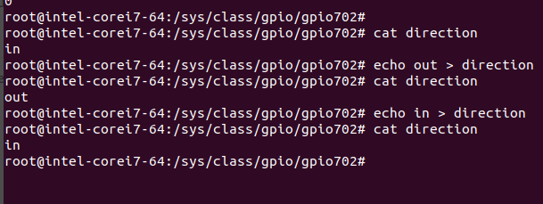 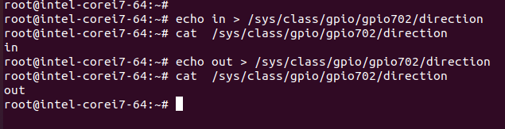 To write the value of a pin to a high Note: Make sure the direction is out when you are trying to change the value to high or low. 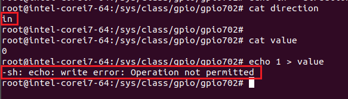 echo 1 > /sys/class/gpio/gpioN/value (N should replace with gpio chip base number)root@intel-corei7-64:~# echo 1 > /sys/class/gpio/gpio702/value root@intel-corei7-64:~# cat /sys/class/gpio/gpio702/value 1root@intel-corei7-64:~# orcd /sys/class/gpio/gpioNecho 1 > valueroot@intel-corei7-64:~# cd /sys/class/gpio/gpio702/ root@intel-corei7-64:/sys/class/gpio/gpio702# echo 1 > value root@intel-corei7-64:/sys/class/gpio/gpio702# cat value1root@intel-corei7-64:/sys/class/gpio/gpio702# To write the value of a pin to low Note: Make sure the direction is out when you are trying to change the value to high or low. echo 0 > /sys/class/gpio/gpioN/valueroot@intel-corei7-64:~# echo 0 > /sys/class/gpio/gpio702/value root@intel-corei7-64:~# cat /sys/class/gpio/gpio702/value 0root@intel-corei7-64:~# or cd /sys/class/gpio/gpioNecho 0 > valueroot@intel-corei7-64:~# cd /sys/class/gpio/gpio702/ root@intel-corei7-64:/sys/class/gpio/gpio702# echo 0 > value root@intel-corei7-64:/sys/class/gpio/gpio702# cat value0root@intel-corei7-64:/sys/class/gpio/gpio702# 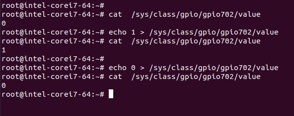 Access I2C GPIO ExpanderThe I2C GPIO expander, which is connected to the BMC, can exclusively be accessed through the ADLINK SEMA Utility. Accessing GPIO Pins Using SEMA GPIO EAPI Function Can check the installation of SEMA by ‘i2cdetect -l’ root@intel-corei7-64:/sys/class/gpio# i2cdetect -li2c-0 i2c Synopsys DesignWare I2C adapter I2C adapteri2c-1 smbus SMBus I801 adapter at efa0 SMBus adapteri2c-2 i2c i915 gmbus dpa I2C adapteri2c-3 i2c i915 gmbus dpb I2C adapteri2c-4 i2c i915 gmbus dpc I2C adapteri2c-5 i2c i915 gmbus tc1 I2C adapteri2c-6 i2c i915 gmbus tc2 I2C adapteri2c-7 i2c i915 gmbus tc3 I2C adapteri2c-8 i2c i915 gmbus tc4 I2C adapteri2c-9 i2c i915 gmbus tc5 I2C adapteri2c-10 i2c i915 gmbus tc6 I2C adapteri2c-11 i2c AUX B/DDI B/PHY B I2C adapteri2c-12 i2c AUX C/DDI C (TC)/PHY C I2C adapteri2c-13 i2c ADLINK BMC I2C adapter bus 1 I2C adapteri2c-14 i2c ADLINK BMC I2C adapter bus 2 I2C adapteri2c-15 i2c ADLINK BMC I2C adapter bus 3 I2C adapterroot@intel-corei7-64:/sys/class/gpio# 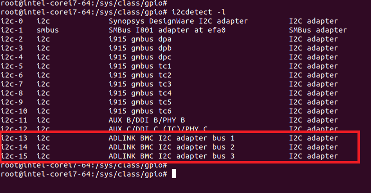 To view the SEMA GPIO Commands semautil /groot@intel-corei7-64:~# semautil /gWrong arguments - GPIO: 1. semautil /g get_direction_cap [ID] 2. semautil /g get_direction [GPIO Bit] 3. semautil /g set_direction [GPIO Bit] [0 - Output or 1 - Input] 4. semautil /g get_level [GPIO Bit] 5. semautil /g set_level [GPIO Bit] [0 - Low or 1 - High] GPIO set/write parameters: GPIO Bit 1-16 Note: GPIO access may not be available on all platformsroot@intel-corei7-64:~# 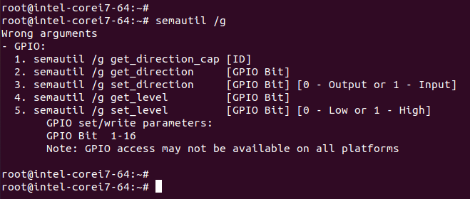 To read the direction and value of a pin Using SEMA GPIO EAPI Functionsemautil /g get_direction [GPIO Bit] semautil /g get_level [GPIO Bit]root@intel-corei7-64:~# semautil /g get_direction 2Direction : Outputroot@intel-corei7-64:~# semautil /g get_level 2 Level: Lowroot@intel-corei7-64:~# 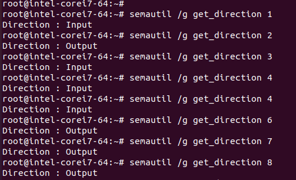 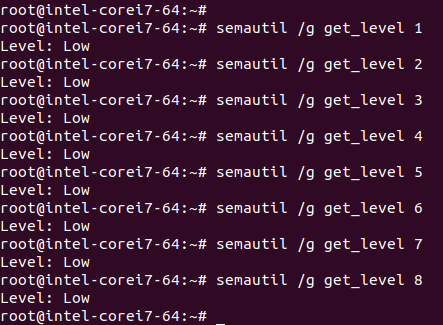 To write the direction of a pin to input or output Using SEMA GPIO EAPI Functionsemautil /g set_direction [GPIO Bit] [0 - Output or 1 - Input] root@intel-corei7-64:~# semautil /g get_direction 2Direction : Outputroot@intel-corei7-64:~# semautil /g set_direction 2 1 Direction updated successfullyroot@intel-corei7-64:~# semautil /g get_direction 2Direction : Inputroot@intel-corei7-64:~# semautil /g set_direction 2 0Direction updated successfullyroot@intel-corei7-64:~# semautil /g get_direction 2Direction : Outputroot@intel-corei7-64:~# 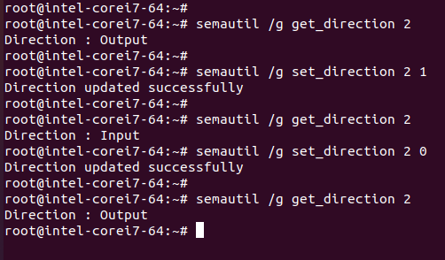 To write the value of a pin to low or high Note: Make sure the direction is out when you are trying to change the value to high or low. Using SEMA GPIO EAPI Functionsemautil /g set_level [GPIO Bit] [0 - Low or 1 - High]root@intel-corei7-64:~# semautil /g get_level 2 Level: Lowroot@intel-corei7-64:~# semautil /g set_level 2 1 GPIO Level updated successfullyroot@intel-corei7-64:~# semautil /g get_level 2Level: Highroot@intel-corei7-64:~# semautil /g set_level 2 0 GPIO Level updated successfullyroot@intel-corei7-64:~# semautil /g get_level 2Level: Lowroot@intel-corei7-64:~# 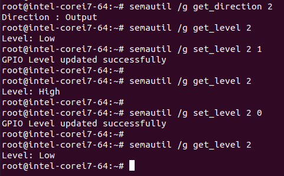 Note: Here the GPIO pins 1 to 8 correspond to GPIO pins in gpiochip5(701 to 708). You can verify successful direction and value changes by executing the command cat /sys/kernel/debug/gpio. Before changing the direction and value: 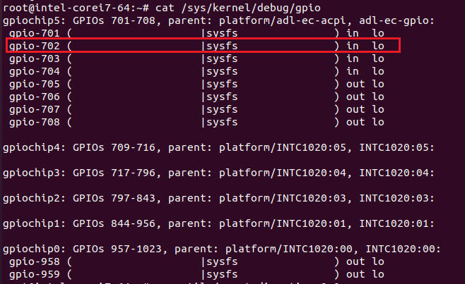 After changing the direction and value: 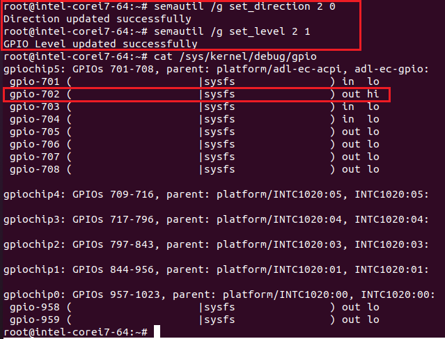 Accessing I2C GPIO expander SX1509The SX1509 I2C GPIO expander, which is connected to the BMC, can exclusively be accessed through the ADLINK SEMA Utility. 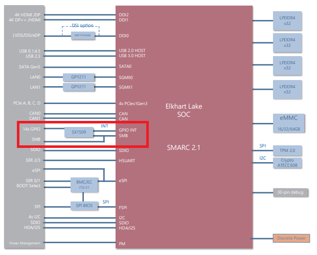 GPIO Pin ConfigurationsOn CN1001 expansion connector S_GPIO is available. These GPIO pins are mapped by to following numbers S_GPIO: S_GPIO_Name CN1001_Pin_Number S_GPIO06_3V Pin7 S_GPIO07_3V Pin12 S_GPIO08_3V Pin11 S_GPIO09_3V Pin13 S_GPIO10_3V Pin15 S_GPIO11_3V Pin16 S_GPIO12_3V Pin18 S_GPIO13_3V Pin22 SX1509 Device and IO Banks Address Name Description Default 0x0F RegDirA Direction register - I/O[7-0] (Bank A) 1111 1111 0x0E RegDirB Direction register - I/O[15-8] (Bank B) 1111 1111 0x11 RegDataA Data register - I/O[7-0] (Bank A) 1111 1111 0x10 RegDataB Data register - I/O[15-8] (Bank B) 1111 1111 Note: Accessing SX1509 using SEMA I2C CommandsSX1509 GPIO IO Expander is probed in I2C bus 2. SX1509 GPIO device slave address is 0x3e . Please refer the below screenshots to know the i2c bus and GPIO device address. 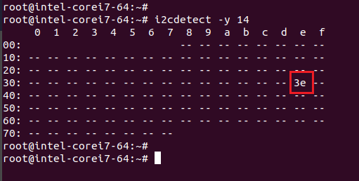 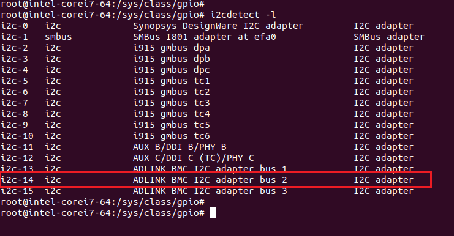 To view the SEMA I2C read_raw and write_raw command usage 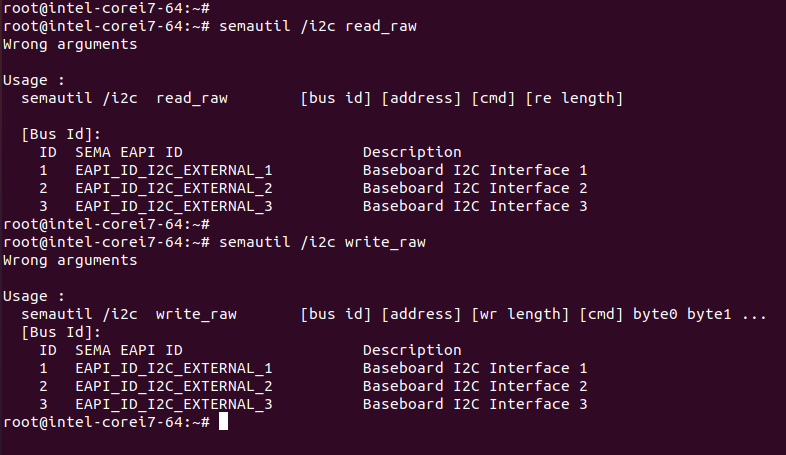 To read the direction and value of a GPIO pin semautil /i2c read_raw [bus id] [address] [cmd] [re length]Direction Registers(0x0F and 0x0E) of sx1509 gpio expander root@intel-corei7-64:~# semautil /i2c read_raw 2 0x3e 0x0f 1 Read data:00 : ffroot@intel-corei7-64:~# semautil /i2c read_raw 2 0x3e 0x0e 1 Read data:00 : ffroot@intel-corei7-64:~#Data Registers(0x10 and 0x11) of sx1509 gpio expander root@intel-corei7-64:~# semautil /i2c read_raw 2 0x3e 0x11 1Read data:00 : e0root@intel-corei7-64:~# semautil /i2c read_raw 2 0x3e 0x10 1 Read data:00 : 3froot@intel-corei7-64:~# 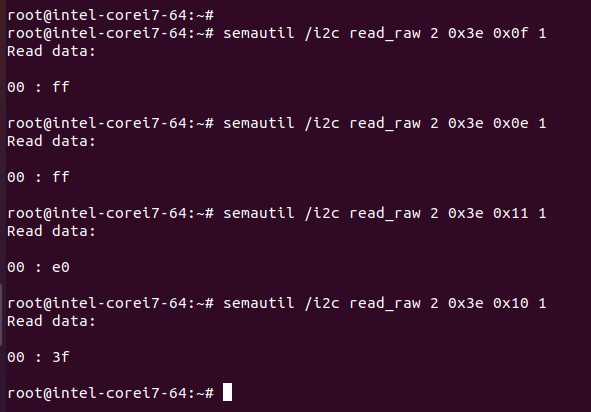 To write the direction of a GPIO pin semautil /i2c write_raw [bus id] [address] [wr length] [cmd] byte0 byte1 ...Direction Registers(0x0F and 0x0E) of sx1509 gpio expander root@intel-corei7-64:~# semautil /i2c write_raw 2 0x3e 2 0x0f 0xbf Data Written Successfullyroot@intel-corei7-64:~#root@intel-corei7-64:~# semautil /i2c write_raw 2 0x3e 2 0x0e 0xfe Data Written Successfullyroot@intel-corei7-64:~# Note: The S_GPIO pins 6 to 13 (S_GPIO06_3V to S_GPIO013_3V) can only be accessed. The S_GPIO06_3V and S_GPIO07_3V can be accessed in RegDirA (0x0F). The default value of RegDirA is 0xFF. Here the direction of bit 6 is set to output by writing 0xBF. 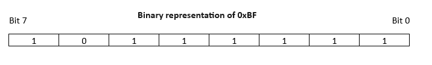 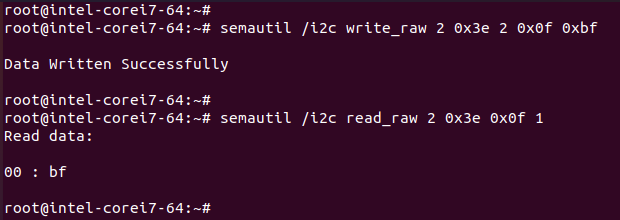 The S_GPIO08_3V to S_GPIO013_3V can be accessed in RegDirB (0x0E). The default value of RegDirB is 0xFF. Here the direction of bit 8 is set to output by writing 0xFE. 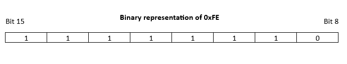 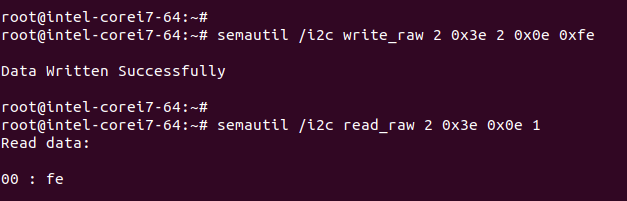 To write the value of a GPIO pin semautil /i2c write_raw [bus id] [address] [wr length] [cmd] byte0 byte1 ...Data Registers(0x11 and 0x10) of sx1509 gpio expander root@intel-corei7-64:~# semautil /i2c write_raw 2 0x3e 2 0x11 0xa0 Data Written Successfullyroot@intel-corei7-64:~#root@intel-corei7-64:~# semautil /i2c write_raw 2 0x3e 2 0x10 0x1f Data Written Successfullyroot@intel-corei7-64:~# The S_GPIO06_3V and S_GPIO07_3V can be accessed in RegDataA (0x11). Here the read_raw output of RegDataA is 0xE0. So 0xA0 is written to set the value of bit 6 to low. Note: The read_raw output of RegDataA may change. 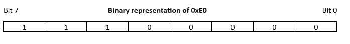 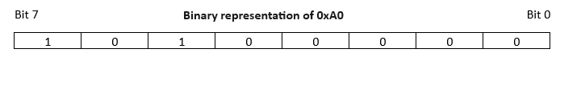 The S_GPIO08_3V to S_GPIO013_3V can be accessed in RegDataB (0x10). Here the read_raw output of RegDataB is 0x3F. So 0x1F is written to set the value of bit 13 to low. Note: The read_raw output of RegDataB may change. 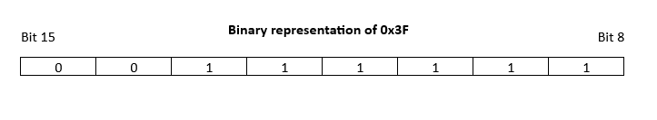 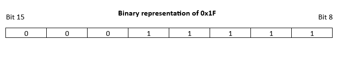 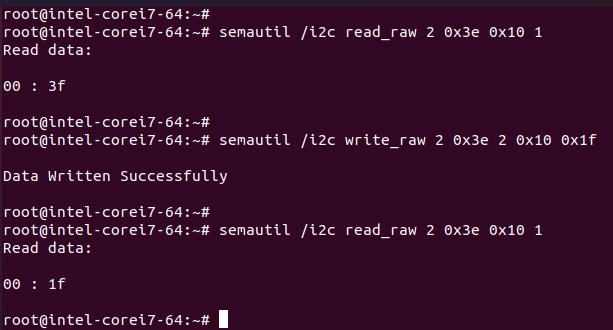